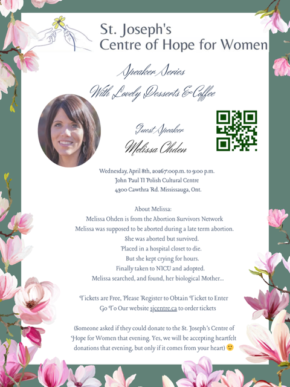

Event invitation
Official poster from St. Joseph's Centre of Hope for Women (includes details and QR code for registration).

Why come?
We often hear that late-term abortion is rare and that children do not survive it. Melissa Ohden brings documented reality and lived experience into the room. She learned about her birth mother’s abortion attempt at age fourteen; medical records corroborate the procedure and her survival.
As a social worker and founder of the Abortion Survivors Network, she speaks nationally on what it means to survive, to heal, and to extend love and forgiveness. Whether you work in ministry, healthcare, education, or simply want to understand the human stakes of abortion policy, this evening will challenge slogans with a personal story you will not forget.
When & where
- Date: Wednesday, April 8, 2026
- Time: 7:00 p.m. to 9:00 p.m.
- Venue: John Paul II Polish Cultural Centre
- Address: 4300 Cawthra Road, Mississauga, Ontario
Tickets & donations
Tickets are free, but you must register to receive a ticket for entry. Visit sjcentre.ca to order your ticket.
The host will gratefully accept voluntary donations that evening in support of St. Joseph's Centre of Hope for Women.